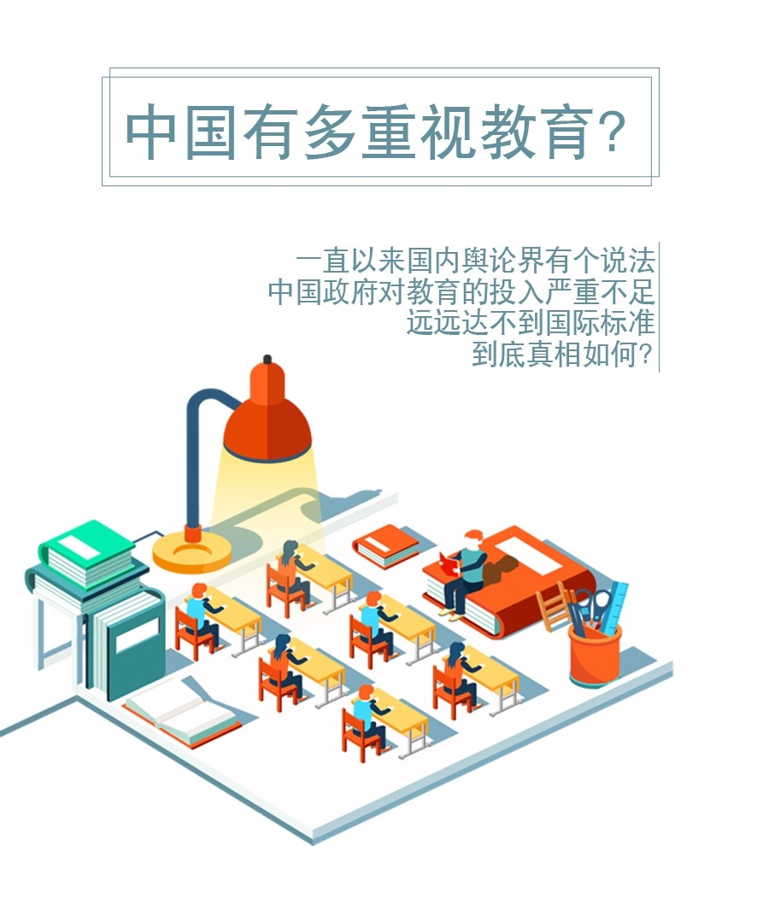
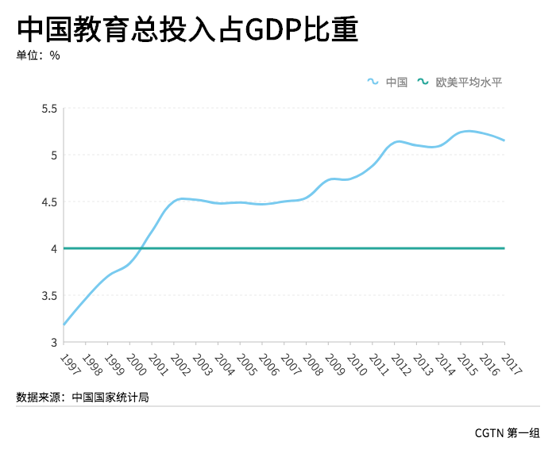
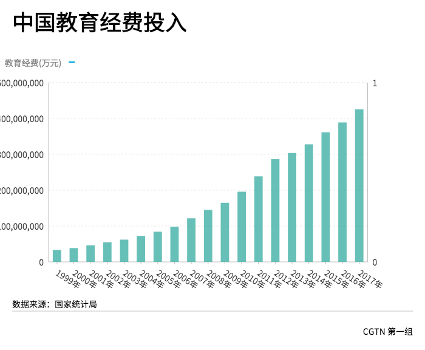
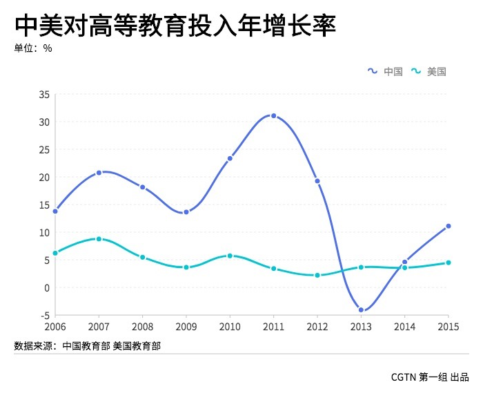
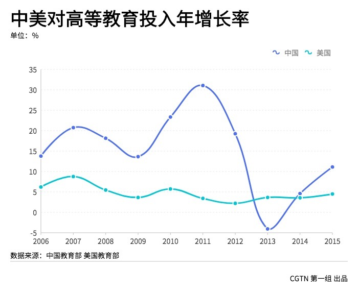

什么是国际标准？
国际对于教育投入一个是公认的标准，全社会教育总投入占GDP的比值，4%是欧美国家的平均水平，超过5%就很优秀了。
中国是否达标？

中国教育总投入占GDP的比重在2001年超过欧美平均水平，2012年超过5%，达到“优秀”水平。

中国教育投入近20年来一直再增加，随着时间的推移，中国政府教育支出在GDP的比重总体是上升的趋势....
众所周知, 美国是教育领域的佼佼者， 联合国的经济指数调查中将美国的教育水准列为世界第一。在世界排名前500名大学中，美国占168所，前20名中，美国占17所。超过80%的美国诺贝尔奖得主都曾在这里学习或工作。
那么我们来看一看，中国政府对教育的重视程度与美国这样的教育领域的超级大国究竟有多大差距？是不是美国政府每年在教育上的支出远远多于中国呢？
.jpg) 中国教育支出占GDP的比重，中国在2008年和美国之间的差距不是很大，但随着时间的推移，中国政府教育支出在GDP的比重总体是上升的趋势，并逐渐与美国拉开差距。

中美对高等教育投入的年增长率变化中可以看出，美国总体增长较为平稳，也未曾出现负增长的情况。中国在2013年突然出现负增长。
中国教育支出占GDP的比重，中国在2008年和美国之间的差距不是很大，但随着时间的推移，中国政府教育支出在GDP的比重总体是上升的趋势，并逐渐与美国拉开差距。

中美对高等教育投入的年增长率变化中可以看出，美国总体增长较为平稳，也未曾出现负增长的情况。中国在2013年突然出现负增长。
.png) 清华一年的收入比哈佛少了133亿元人民币。而清华得到的政府拨款是多于哈佛的。可见，中国缺少的是社会各界的力量和科研收入。
既然无论是中国全社会对教育的总投入可以比肩美国。那么为什么会出现“中国政府对教育的投入严重不足”这种说法呢？
清华一年的收入比哈佛少了133亿元人民币。而清华得到的政府拨款是多于哈佛的。可见，中国缺少的是社会各界的力量和科研收入。
既然无论是中国全社会对教育的总投入可以比肩美国。那么为什么会出现“中国政府对教育的投入严重不足”这种说法呢？
中美人均教育对比
当我们把这一切放在我们人口基数之上，我们的优势全无，甚至与欧美发达国还有巨大的差距。
美国人均教育支出是中国44倍
中国政府对教育的重视程度，从政府的资金投入上来看，是不低于美国的。但是由于中国庞大的人口基数，均摊在个人身上的资金投入和美国相比相去甚远。